Figure 1 - Sample /etc/sshd/sshd_config file
AllowTcpForwarding yes
X11Forwarding yes
X11DisplayOffset 10
X11UseLocalhost yes
Although I have selected these four settings for manipulation, your sshd.config
file may contain more settings.
Figure 2 - Initial PuTTY configuration
- Here, we show the steps necessary to give our Windows captive access to an external
Linux system.
Figure 2a: Initial (empty) PuTTY Configuration
| 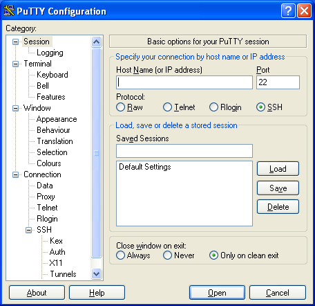 |
- First, we start off with the initial (empty) PuTTY configuration menu, and fill
in the IP address of our Linux "safe haven" system. We also give this
profile a name in the Saved Sessions window.
Figure 2b: Addressing the Linux "Safe haven"
| 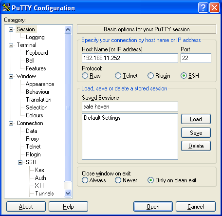 |
- Next, we save the profile by clicking the "Save" button, which
saves our settings for future use.
Figure 2c: Saved "Safe Haven" address
| 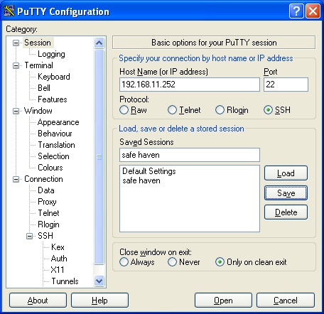 |
Figures 3a-3e - Using PuTTY to escape to Linux
- Here, we show how PuTTY connects from our Windows system to the ssh server
on our Linux "Safe Haven".
-
Figure 3a: PuTTY asks if you trust the target system
| 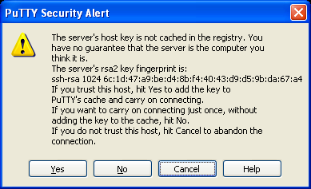 |
- Once we click the "Open" button on the PuTTY configuration window, PuTTY
performs an initial conversation with our Linux system. If you trust the connection,
you answer "Yes" and PuTTY will continue on with your Linux login.
-
Figure 3b: Logging on to Linux - your user ID please
| 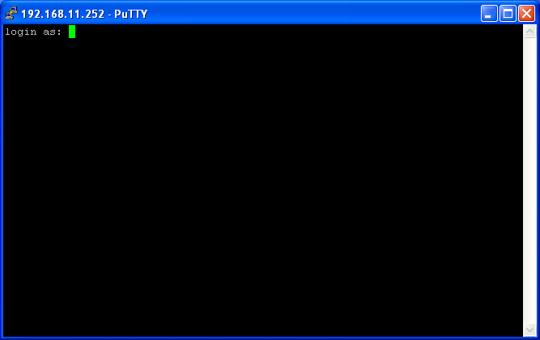 |
- The first thing Linux will ask is your user ID. Enter it at the prompt
and the login will continue.
-
Figure 3c: And your password, if you mind
| 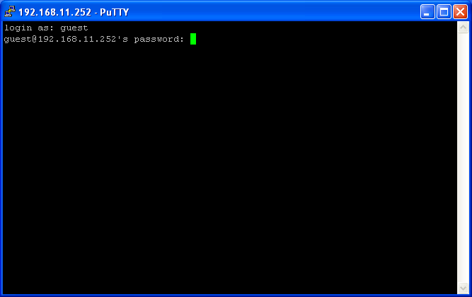 |
- Next, Linux will ask for your password. Enter it at the prompt
and the login will complete.
-
Figure 3d: Past the security perimeter, and into the commandline
| 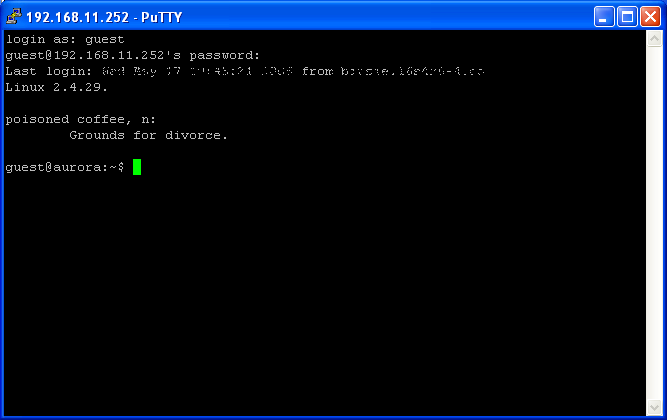 |
- Now, with the logon complete, you are ready to enter console commands
into your Linux system.
-
Figure 3e: Doing useful work at the Linux commandline
| 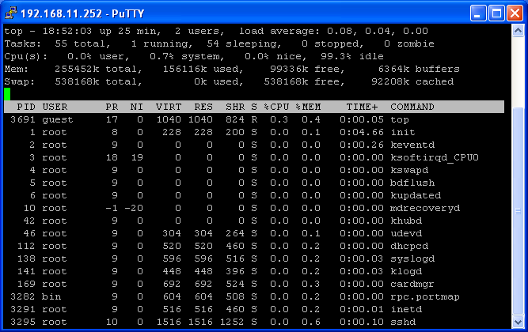 |
Figure 4 - Windows Icon for Xming X server
Figures 5a-5c - Escaping to Linux GUI
- We still have a minor setup to complete in order to permit GUI access
to Linux. We have to enable X11 forwarding on our PuTTY session.
-
Figure 5a: Enable PuTTY X11 forwarding
| 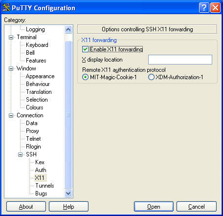 |
- With X11 forwarding enabled, PuTTY and OpenSSH will set the Linux $DISPLAY
environment variable to point at the SSH tunnel to our Xming X server.
-
Figure 5b: Linux recognizes X11 forwarding
| 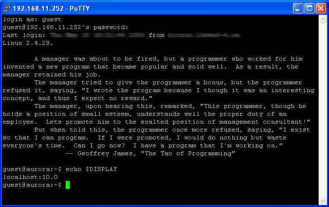 |
- And, with $DISPLAY set properly, we can start up a Linux X application and have
it display on our Windows system
-
Figure 5c: Linux GUI application, now showing here
| 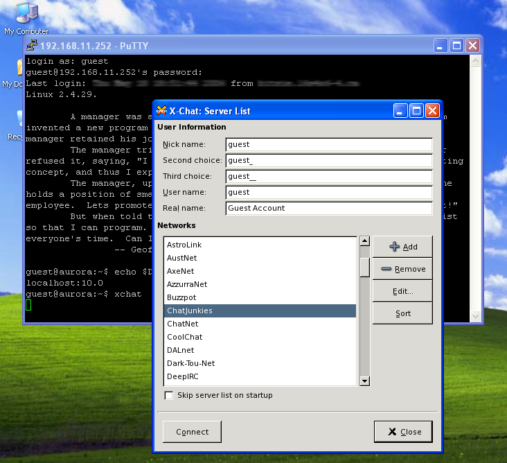 |